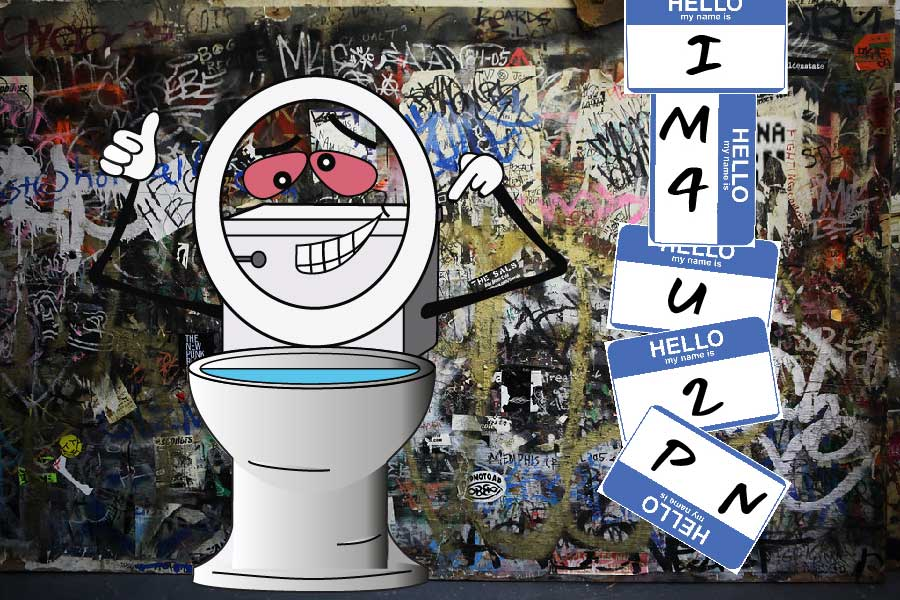

Home | Pixels | Vectors | Motion | Layout | Contact

Social anxiety can strike at any moment. When in intense social situations, I find escaping to the bathroom is always an acceptable excuse. In my retreat, I spend time looking at the graffiti of the walls. Sometime the messages can be instructive and helpful!